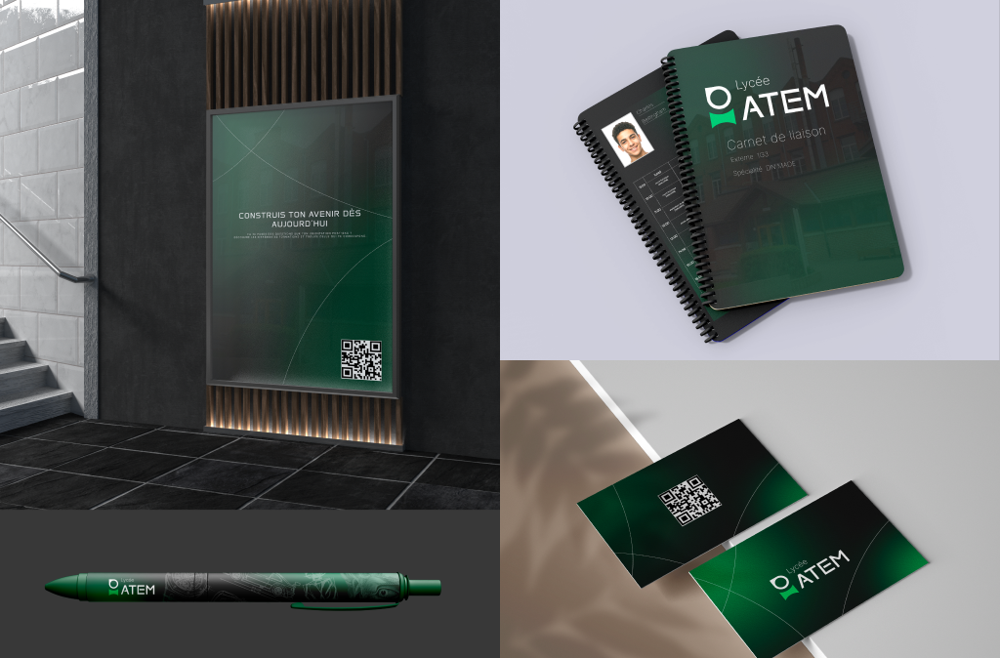
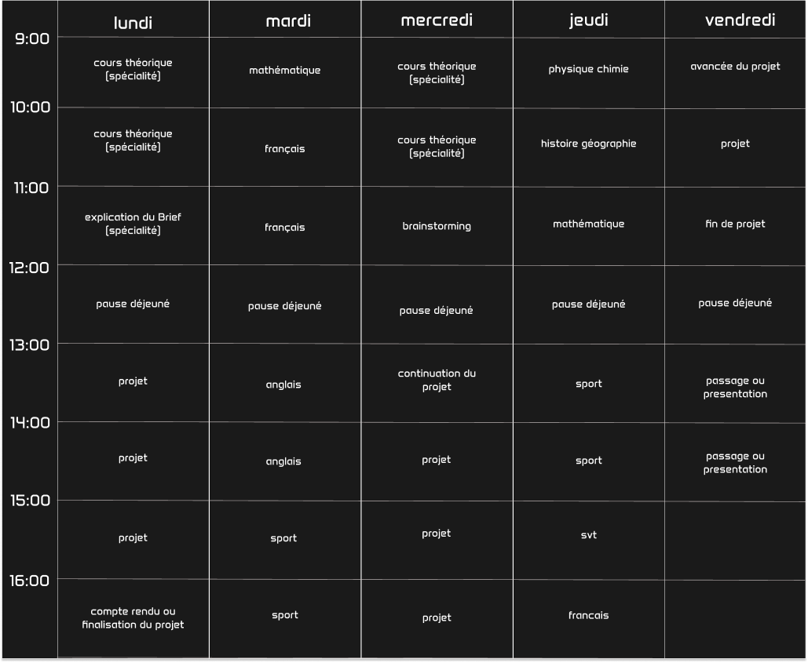
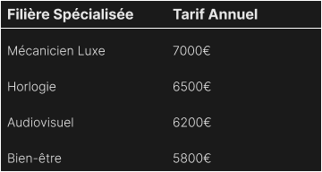

FAQ
🎓 Inscriptions et Admissions (Entrée en Seconde)
1. Comment se déroule la procédure d'admission pour entrer en classe de Seconde ?
L'admission dans notre lycée s'effectue en deux étapes. Dans un premier temps, nous procédons à l'étude approfondie de votre dossier scolaire. Si celui-ci est retenu, la famille et l'élève sont conviés à un entretien individuel avec la direction ou un responsable pédagogique.
2. Quels sont les éléments pris en compte dans le dossier scolaire ?
Nous regardons bien sûr les résultats académiques (bulletins de l'année en cours et de l'année précédente), mais nous accordons une importance toute particulière au comportement, à l'assiduité, ainsi qu'aux appréciations laissées par vos professeurs de collège.
3. En quoi consiste l'entretien d'admission ? Faut-il s'y préparer ?
L'entretien n'est pas un examen, c'est un échange ! Il nous permet de faire connaissance avec l'élève, de comprendre ses motivations pour rejoindre notre lycée et d'écouter son projet personnel. C'est aussi le moment idéal pour vous et vos parents de poser toutes vos questions sur la vie dans notre établissement.

💶 Tarifs et Modalités Financières
1. Quels sont les frais à prévoir lors de la candidature ?
Lors du dépôt de votre dossier, des frais de dossier de 150 € sont demandés. Ces frais couvrent l'étude administrative du dossier ainsi que l'organisation des entretiens de motivation. Ils restent acquis à l'établissement quel que soit le résultat de l'admission.
2. Quel est le montant de la contribution scolaire annuelle ?
Pour l'année scolaire, le montant de l'inscription annuelle s'élève à 800 €. Ce tarif correspond aux frais de scolarité de base pour un élève de la Seconde à la Terminale.
3. Ce tarif comprend-il les services annexes (demi-pension, activités périscolaires) ?
Non, le montant de 800 € concerne uniquement les frais d'inscription et de scolarité. La restauration (demi-pension) ainsi que les éventuelles options ou sorties facultatives font l'objet d'une facturation complémentaire.
📅 Calendrier et Inscriptions
1. Quand a lieu la rentrée scolaire ?
La rentrée des classes pour tous les niveaux s'effectue au mois de septembre. Le calendrier détaillé (jour et heure par niveau) est envoyé aux familles par courrier ou e-mail durant l'été et affiché sur le tableau d'accueil de l'établissement.
2. Quelle est la période pour déposer une candidature ?
La campagne d'inscriptions se déroule de mars à août. Nous vous conseillons toutefois de déposer votre dossier dès le printemps (mars/avril) car le nombre de places est limité et les entretiens de sélection commencent dès l'ouverture de la campagne.
3. Peut-on encore s'inscrire en plein milieu de l'été ?
Oui, les inscriptions restent ouvertes jusqu'au mois d'août, sous réserve qu'il reste des places disponibles dans la section demandée. Attention : le secrétariat administratif ferme généralement quelques semaines en juillet pour les congés annuels.

🛠️ Formations Spécialisées
1. Quelles sont les formations spécialisées proposées et quels sont leurs tarifs ?
Notre établissement propose plusieurs cursus techniques de haut niveau. Le coût de la scolarité varie en fonction des équipements professionnels et des infrastructures spécifiques nécessaires à l'apprentissage de chaque métier. Voici le détail des tarifs annuels :

2. Que comprennent exactement ces frais de scolarité ?
Ces tarifs couvrent les enseignements généraux et spécialisés, ainsi que l'accès privilégié à nos plateaux techniques (ateliers de haute mécanique, laboratoires d'horlogerie, studios audiovisuels et salles de soins). Ils incluent également l'utilisation des machines et du matériel professionnel de l'établissement.
3. Faut-il prévoir des frais de matériel supplémentaires pour ces filières ?
(Suggestion de personnalisation : C'est souvent le cas pour les filières techniques) Selon la formation choisie, l'achat d'un équipement personnel (caisse à outils spécifique, tenue professionnelle, petit matériel) peut vous être demandé avant la rentrée. La liste exacte est fournie lors de l'inscription.